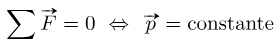

La primera ley de Newton es general y puede aplicarse a cualquier cosa: desde un objeto que se desliza sobre una mesa hasta un satélite en órbita o la sangre que bombea el corazón. Los experimentos han verificado que cualquier cambio de velocidad (rapidez o dirección) deberá causarlo una fuerza externa. La idea de las leyes universales o de aplicación general es importante: es una característica básica de todas las leyes de la física.
Identificar estas leyes es como reconocer patrones en la naturaleza a partir de los cuales se pueden descubrir otros patrones. El genio de Galileo, que desarrolló por primera vez la idea de la primera ley del movimiento, y de Newton, que la aclaró, fue plantear la pregunta fundamental: "¿cuál es la causa?". Pensar en términos de causa y efecto es fundamentalmente distinto al enfoque típico de la Grecia antigua, cuando preguntas como "¿por qué un tigre tiene rayas?" se habrían respondido de forma aristotélica, como "esa es la naturaleza de la bestia". La capacidad de pensar en términos de causa y efecto es la habilidad de establecer una conexión entre un comportamiento observado y el mundo circundante.
La Primera Ley de Newton del Movimiento, comúnmente referida como la Ley de la Inercia, es un pilar fundamental de la física clásica y establece la relación entre el estado de movimiento de un objeto y la ausencia o presencia de fuerzas externas. Esta ley postula que todo objeto persiste en su estado de reposo, o de movimiento rectilíneo uniforme, a menos que una fuerza neta externa actúe sobre él y lo obligue a cambiar dicho estado.
La ley introduce la idea de un sistema de referencia inercial. En un sistema inercial, cuando la suma vectorial de todas las fuerzas externas aplicadas a un objeto es cero (ΣF = 0), la aceleración es nula (a = 0). Esto puede significar que el objeto está en reposo o se mueve a velocidad constante. Es un estado de equilibrio traslacional.
Existen numerosas aplicaciones prácticas: desde fenómenos cotidianos hasta ingeniería aeroespacial. Por ejemplo, en el espacio exterior un objeto seguirá moviéndose indefinidamente en línea recta a velocidad constante. En la Tierra, la fricción y la resistencia del aire suelen detener los objetos. Un ejemplo cotidiano es un pasajero que, al frenar un automóvil, continúa moviéndose hacia adelante debido a su inercia.
Fórmula de la primera ley de Newton
Para profundizar más en el concepto de la primera ley de Newton, en este apartado veremos la fórmula con la que se puede expresar dicha ley.
Matemáticamente, la fórmula establece que si el sumatorio de fuerzas de un sistema es igual a cero, la aceleración también es nula. El recíproco también es cierto.

Asimismo, si la suma de fuerzas es nula, implica que la cantidad de movimiento (o momento lineal) es constante.
Ejemplos de cómo usarla
¿Cuál es la fuerza que debe hacer un ascensor para subir un objeto de 7 kg?
Lo primero es calcular la fuerza de la gravedad que ejerce la Tierra sobre el objeto usando la fórmula del peso:
Entonces, según la primera ley de Newton, si el ascensor hace una fuerza vertical hacia arriba de 68.67 N, el objeto se quedará quieto ya que la fuerza resultante será nula. Por lo tanto, el ascensor debe hacer una fuerza superior a 68.67 N para que empiece a subir.